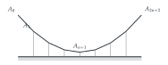
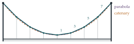

The above diagram represents a suspension bridge. A heavy uniform horizontal roadway is attached by vertical struts to a light flexible chain at points \(A_1 = (x_1, y_1)\), \(A_2 = (x_2, y_2), \ldots, A_{2n+1} = (x_{2n+1}, y_{2n+1})\), where the coordinates are referred to horizontal and vertically upward axes \(Ox\), \(Oy\). The chain is fixed to external supports at points \[A_0 = (x_0, y_0) \quad\text{and}\quad A_{2n+2} = (x_{2n+2}, y_{2n+2})\] at the same height. The weight of the chain and struts may be neglected. Each strut carries the same weight \(w\). The horizontal spacing \(h\) between \(A_i\) and \(A_{i+1}\) (for \(0 \leq i \leq 2n + 1\)) is constant. Write down equations satisfied by the tensions \(T_i\) in the portion \(A_{i-1}A_i\) of the chain for \(1 \leq i \leq n + 1\). Hence or otherwise show that \[\frac{h}{y_n - y_{n+1}} = \frac{3h}{y_{n-1} - y_n} = \cdots = \frac{(2n + 1)h}{y_0 - y_1}.\] Verify that the points \(A_0, A_1, \ldots, A_{2n+1}, A_{2n+2}\) lie on a parabola.
The hook
Hold a chain by its two ends and it hangs in a curve called the catenary (from the Latin for chain). Galileo thought it was a parabola; it is not, as the teenage Huygens showed in 1646. But hang a heavy roadway from the chain by evenly spaced struts, as in a suspension bridge, and the chain does form a parabola. The difference is in how the weight is spread: along the curved chain itself for the catenary, evenly along the horizontal for the bridge.
This question proves the parabola with nothing more than resolving forces at each joint. The key is that the horizontal component of tension is the same all the way along, so each segment’s slope is proportional to the weight it supports. The result is a beautiful pattern: the drops between successive joints go up in the odd numbers \(1, 3, 5, 7, \ldots\), whose partial sums are the perfect squares.
Before you start
At each joint \(A_i\), three forces act: the tensions in the two neighbouring segments, and the weight \(w\) hanging from the strut. Which component of tension can the weight not affect?
The weight is vertical, so at each joint the horizontal components of the two tensions must balance. So the horizontal component of tension, \(H\) say, is the same in every segment of the chain.
Working it through
Stage 1 The equations at each joint
Let segment \(A_{i-1}A_i\) make angle \(\phi_i\) below the horizontal (going from \(A_{i-1}\) towards the middle), so its tension \(T_i\) has horizontal component \(T_i\cos\phi_i\) and vertical component \(T_i\sin\phi_i\). Resolving at \(A_i\) for \(1 \leq i \leq n\): \[T_i\cos\phi_i = T_{i+1}\cos\phi_{i+1} = H, \qquad T_i\sin\phi_i - T_{i+1}\sin\phi_{i+1} = w.\] (The segment on the outer side pulls up and out with the larger vertical component; the inner segment pulls in and slightly down; the difference supports the strut.)
What happens at the middle joint \(A_{n+1}\)? Use the symmetry of the bridge.
By symmetry, the two segments meeting at \(A_{n+1}\) are mirror images, so each supports half of its strut: \(T_{n+1}\sin\phi_{n+1} = \frac12w\).
Stage 2 Slopes from weights
Working outwards from the middle, the vertical components are \[T_{n+1}\sin\phi_{n+1} = \tfrac12w, \quad T_n\sin\phi_n = \tfrac32w, \quad\ldots,\quad T_1\sin\phi_1 = \tfrac{2n+1}{2}w.\] Dividing each by \(H\), the slopes are \(\tan\phi_i = \frac{(2(n + 1 - i) + 1)w}{2H}\). The slope of segment \(A_{i-1}A_i\) is also \(\frac{y_{i-1} - y_i}{h}\), so \[\frac{y_n - y_{n+1}}{h} = \frac{w}{2H}, \qquad \frac{y_{n-1} - y_n}{h} = \frac{3w}{2H}, \qquad\ldots,\qquad \frac{y_0 - y_1}{h} = \frac{(2n + 1)w}{2H}.\] Inverting and multiplying by the odd numbers, each of \(\frac{h}{y_n - y_{n+1}}\), \(\frac{3h}{y_{n-1} - y_n}\), …, \(\frac{(2n + 1)h}{y_0 - y_1}\) equals \(\frac{2H}{w}\).■
Stage 3 The parabola
Let \(j\) count joints outwards from the middle, so that \(A_{n+1-j}\) is at horizontal distance \(jh\) from \(A_{n+1}\). How far is it above \(A_{n+1}\)?
Adding the drops, with \(c = \frac{wh}{2H}\): \[y_{n+1-j} - y_{n+1} = c\bigl(1 + 3 + 5 + \cdots + (2j - 1)\bigr) = cj^2.\] With \(x\) measured from the middle, \(x = jh\), so the height above the lowest joint is \(\frac{c}{h^2}x^2 = \frac{w}{2Hh}x^2\). By symmetry the same holds on the other side, and the supports (\(j = n + 1\)) fit the same formula. So all the points lie on the parabola \[y = y_{n+1} + \frac{w}{2Hh}(x - x_{n+1})^2. \qed\]

Looking back
Find what is constant. With only vertical loads, the horizontal tension is the same everywhere.
Accumulate from the middle. Each segment supports all the weight between it and the middle, so the vertical components grow in steps of \(w\).
Odd numbers sum to squares. \(1 + 3 + \cdots + (2j - 1) = j^2\) turned a list of slopes into a parabola.
What’s really going on
Parabola or catenary?
The continuous version of the argument explains both curves. For a chain \(y(x)\) under constant horizontal tension \(H\), the vertical component of tension is \(Hy'\), and over a short stretch it changes by the load carried there: \(H\,\mathrm{d}y' = \mathrm{d}W\).
If the load is spread evenly horizontally (a heavy roadway, weight \(\rho\) per unit length of road), then \(Hy'' = \rho\), so \(y\) is a quadratic: a parabola.
If the load is the chain’s own weight, spread evenly along the chain (\(\rho\) per unit length of chain), then \(Hy'' = \rho\sqrt{1 + y'^2}\), whose solution is the catenary \(y = c\cosh\frac xc\), with \(c = H/\rho\).
Near the bottom, where the chain is nearly horizontal, the two are almost the same; they differ near the supports, where the chain is steep and a given horizontal distance contains more chain. Real suspension bridges, whose deck is much heavier than their cables, are very close to parabolas.
Upside-down chains and arches
A chain is in pure tension; turn its shape upside down and you have an arch in pure compression, with no tendency to bend. Robert Hooke published this in 1675 as an anagram, which decoded reads: “As hangs the flexible line, so but inverted will stand the rigid arch.” Christopher Wren and Hooke used the idea for the dome of St Paul’s Cathedral, and Antoni Gaudí designed the Sagrada Família in Barcelona by hanging weighted strings from the ceiling and photographing them upside down. The Gateway Arch in St Louis is a (weighted) inverted catenary.
In 1690 Jakob Bernoulli challenged mathematicians to find the shape of a hanging chain. Within a year, solutions were published by his brother Johann, by Leibniz and by Huygens. Johann Bernoulli later recalled with glee that his brother, who had set the problem, had failed to solve it. The catenary was one of the first triumphs of the new calculus, and it led to the hyperbolic functions \(\cosh\) and \(\sinh\), studied systematically by Vincenzo Riccati and Johann Heinrich Lambert in the eighteenth century.
The thinking skill
For a structure made of joints and straight members, balance forces at each joint. Constant components and accumulating loads often reveal the shape.
At university this becomes the analysis of trusses and frameworks in engineering, and, in the continuous limit, the differential equations of cables, beams and membranes. The step from a discrete chain to a continuous one is the same move from sums to integrals seen in Section 10.3.
Try this next
An even number of struts. Repeat the question with \(2n\) struts, so that the lowest point of the chain is a horizontal segment in the middle. Do the joints still lie on a parabola?
The tension. Find the greatest tension in the chain, in terms of \(H\), \(w\) and \(n\). Where is it?
The catenary. Verify that \(y = c\cosh\frac xc\) satisfies \(y'' = \frac1c\sqrt{1 + y'^2}\). Show that the length of the catenary from \(x = 0\) to \(x = X\) is \(c\sinh\frac Xc\).
Galileo’s error. A chain of length \(2L\) hangs between two supports at distance \(2d\) apart. For \(L\) only slightly larger than \(d\), show that the sag of the catenary is approximately the same as that of a parabola. Why did Galileo’s experiments not reveal the difference?
Further reading
E. H. Lockwood, A Book of Curves (Cambridge University Press). The catenary, the parabola and their relatives.
Jacques Heyman, The Stone Skeleton (Cambridge University Press). How masonry arches and domes stand up, from Hooke’s chain onwards.
David Billington, The Tower and the Bridge (Princeton University Press). The art and engineering of bridges.